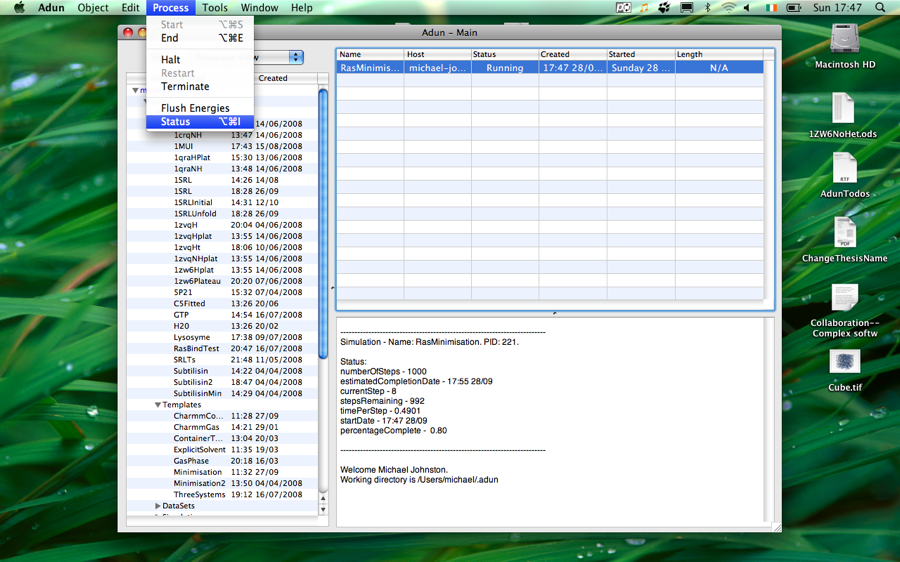

Running a Simulation
Once you've created a simulation you'll want to start it going - read on.

To start a simulation:
- First create a simulation (see Creating a Simulation for more information)
- Select the created simulation in the process table
- Select 'Process->Start'. The process status will change from 'Waiting' to 'Running'
- You can control the process using the other commands in the Process menu - try the Status command
- Once the simulation is finished an entry for it will appear in the database. However you can analyse the running simulation by selecting the entry in the process table and clicking Object->Analyse.